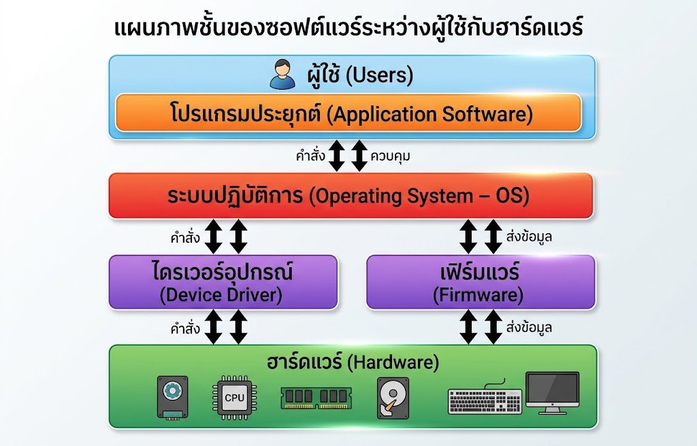
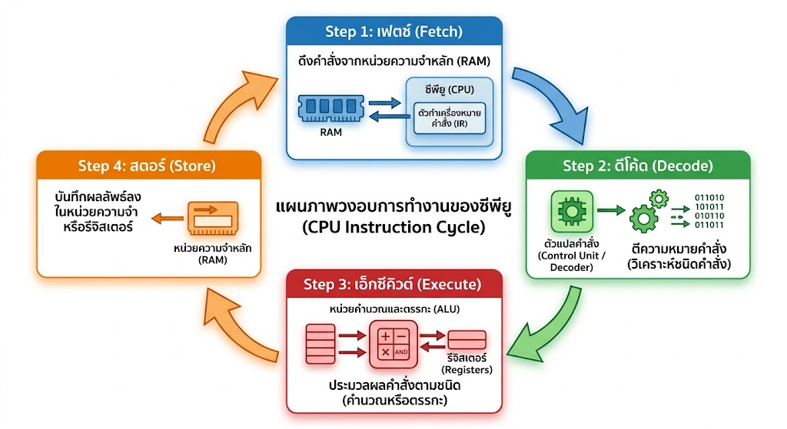
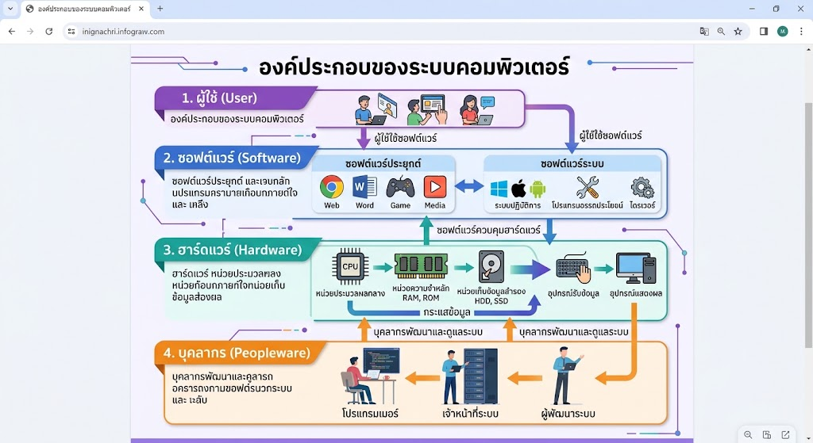

องค์ประกอบของระบบคอมพิวเตอร์ (Computer System)
1. ส่วนประกอบของระบบคอมพิวเตอร์
ระบบคอมพิวเตอร์ประกอบด้วย 3 ส่วนหลักที่ทำงานร่วมกัน
- ฮาร์ดแวร์ (Hardware) คือ ตัวเครื่องและอุปกรณ์
- ซอฟต์แวร์ (Software) คือ โปรแกรมหรือชุดคำสั่ง
- พีเพิลแวร์ (Peopleware) คือ บุคลากรที่เกี่ยวข้อง
ทั้งสามส่วนขาดส่วนใดส่วนหนึ่งไม่ได้ ฮาร์ดแวร์ที่ไม่มีซอฟต์แวร์ก็ทำงานไม่ได้ ซอฟต์แวร์ที่ไม่มีฮาร์ดแวร์ก็ไม่มีที่ให้ทำงาน และทั้งสองส่วนต้องมีบุคลากรเป็นผู้ใช้ ดูแล และพัฒนา
2. ฮาร์ดแวร์ (Hardware)
ฮาร์ดแวร์คือส่วนที่จับต้องได้ แบ่งตามหน้าที่ได้ 6 ประเภท
| ประเภท | หน้าที่ | ตัวอย่าง |
|---|---|---|
| อุปกรณ์นำเข้า (Input Device) | รับข้อมูลและคำสั่งเข้าสู่คอมพิวเตอร์ | คีย์บอร์ด เมาส์ สแกนเนอร์ ไมโครโฟน |
| อุปกรณ์ประมวลผล (Process Device) | ประมวลผลตามคำสั่ง | ซีพียู (CPU) |
| อุปกรณ์เชื่อมต่อ (Interconnection) | เชื่อมส่วนต่าง ๆ และส่งข้อมูลระหว่างกัน | เมนบอร์ด บัส สายเคเบิล |
| หน่วยความจำหลัก (Main Memory) | เก็บข้อมูลและคำสั่งชั่วคราวขณะทำงาน | RAM, ROM |
| อุปกรณ์บันทึกข้อมูล (Storage Device) | เก็บข้อมูลไว้ใช้ภายหลัง | ฮาร์ดดิสก์ SSD แฟลชไดรฟ์ |
| อุปกรณ์แสดงผล (Output Device) | แสดงผลลัพธ์ให้ผู้ใช้เห็นหรือได้ยิน | จอภาพ เครื่องพิมพ์ ลำโพง |
รายละเอียดฮาร์ดแวร์แต่ละประเภท
- อุปกรณ์นำเข้า แปลงสิ่งที่ผู้ใช้ป้อน เช่น การพิมพ์ การคลิก เสียงพูด ให้เป็นสัญญาณที่คอมพิวเตอร์ประมวลผลได้
- อุปกรณ์ประมวลผล คือซีพียู เปรียบเสมือนสมองของเครื่อง ทำหน้าที่คำนวณและควบคุมการทำงานของอุปกรณ์อื่น
- อุปกรณ์เชื่อมต่อ เช่น เมนบอร์ดและบัส เป็นเส้นทางให้ข้อมูลเดินทางระหว่างซีพียู หน่วยความจำ และอุปกรณ์ต่าง ๆ
- หน่วยความจำหลัก เก็บโปรแกรมและข้อมูลที่กำลังใช้งาน ทำงานเร็วแต่ความจุไม่มาก
- อุปกรณ์บันทึกข้อมูล เก็บข้อมูลได้มากและไม่หายเมื่อปิดเครื่อง แต่เรียกใช้ช้ากว่าหน่วยความจำหลัก
- อุปกรณ์แสดงผล นำผลที่ประมวลผลแล้วมาแสดงในรูปที่มนุษย์รับรู้ได้ เช่น ภาพ ตัวอักษร เสียง หรือกระดาษ
| เปรียบเทียบ | หน่วยความจำหลัก (RAM) | อุปกรณ์บันทึกข้อมูล |
|---|---|---|
| หน้าที่ | เก็บงานที่กำลังทำอยู่ | เก็บงานไว้ใช้ภายหลัง |
| เมื่อปิดเครื่อง | ข้อมูลหายไป | ข้อมูลยังอยู่ |
| ความเร็ว | เร็วกว่า | ช้ากว่า |
| ความจุ | น้อยกว่า | มากกว่า |
3. ซอฟต์แวร์ (Software)
ซอฟต์แวร์ระบบ (System Software)
- ระบบปฏิบัติการ (OS) เช่น Windows, macOS, Linux
- โปรแกรมเสริม เช่น Utility และ Antivirus
ซอฟต์แวร์ประยุกต์ (Application Software)
- ใช้ทำงานเฉพาะด้าน เช่น เอกสาร บัญชี กราฟิก เว็บ เกม
- ติดตั้งเพิ่มได้บน PC, Mac, Smartphone
- นิยมติดตั้งผ่าน App Store เพื่อความปลอดภัย
Web Application
ทำงานผ่านเบราว์เซอร์และประมวลผลบน Cloud โดยไม่ต้องติดตั้ง เช่น Google Docs, Canva บางประเทศมีกฎหมายควบคุมด้านความปลอดภัยและที่ตั้งของเซิร์ฟเวอร์

ระบบปฏิบัติการทำอะไรบ้าง
- ควบคุมและแบ่งทรัพยากรของเครื่อง เช่น ซีพียูและหน่วยความจำ ให้โปรแกรมต่าง ๆ
- จัดการไฟล์และโฟลเดอร์
- ควบคุมอุปกรณ์ เช่น เครื่องพิมพ์ คีย์บอร์ด จอภาพ
- เป็นตัวกลางให้ผู้ใช้สั่งงานเครื่องผ่านหน้าจอที่ใช้ง่าย
ตัวอย่างโปรแกรมเสริม
- Utility เช่น โปรแกรมบีบอัดไฟล์ โปรแกรมสำรองข้อมูล โปรแกรมล้างไฟล์ขยะ
- Antivirus ตรวจจับและกำจัดไวรัสหรือมัลแวร์
| งานที่ต้องการ | ซอฟต์แวร์ประยุกต์ที่ใช้ |
|---|---|
| เอกสาร | โปรแกรมประมวลผลคำ เช่น Word, Google Docs |
| บัญชี | โปรแกรมบัญชีและตารางคำนวณ |
| กราฟิก | โปรแกรมแต่งภาพและออกแบบ เช่น Canva |
| เว็บ | เว็บเบราว์เซอร์ เช่น Chrome, Edge |
| เกม | เกมบนคอมพิวเตอร์และสมาร์ตโฟน |
4. บุคลากร (Peopleware)
บุคลากรแบ่งเป็น 3 กลุ่ม แต่ละกลุ่มมีบทบาทต่างกัน
- ผู้ใช้ทั่วไป ใช้โปรแกรมเพื่อทำงานของตน ควรมีทักษะพื้นฐานในการใช้คอมพิวเตอร์และรู้จักใช้งานอย่างปลอดภัย
- ผู้เชี่ยวชาญด้านคอมพิวเตอร์ ติดตั้ง พัฒนา และดูแลระบบให้ผู้อื่นใช้งานได้
- ผู้บริหาร ตัดสินใจและวางนโยบายการใช้เทคโนโลยีในองค์กร โดยอาศัยสารสนเทศที่ระบบจัดทำขึ้น
ผู้เชี่ยวชาญด้านคอมพิวเตอร์
| ตำแหน่ง | หน้าที่ | คุณสมบัติที่ควรมี |
|---|---|---|
| ช่างเทคนิคคอมพิวเตอร์ / IT Support | ติดตั้ง ซ่อม และดูแลเครื่อง ช่วยแก้ปัญหาให้ผู้ใช้ | เข้าใจฮาร์ดแวร์และระบบปฏิบัติการ แก้ปัญหาเก่ง มีใจบริการ |
| System Analyst | วิเคราะห์ปัญหาและความต้องการ แล้วออกแบบระบบ | คิดอย่างเป็นระบบ สื่อสารกับผู้ใช้และทีมพัฒนาได้ดี |
| UX/UI Designer | ออกแบบหน้าตาและประสบการณ์การใช้งาน | เข้าใจผู้ใช้ มีความคิดสร้างสรรค์ ใช้เครื่องมือออกแบบเป็น |
| Software Developer | เขียนโปรแกรมตามที่ออกแบบ | รู้ภาษาโปรแกรม มีตรรกะ เรียนรู้เทคโนโลยีใหม่อยู่เสมอ |
| System Tester | ทดสอบหาข้อผิดพลาดก่อนใช้งานจริง | ละเอียดรอบคอบ ช่างสังเกต เขียนรายงานปัญหาได้ชัดเจน |
| Network Administrator | ดูแลเครือข่ายและความปลอดภัยของการเชื่อมต่อ | รู้ระบบเครือข่ายและความปลอดภัย พร้อมแก้ปัญหาเร่งด่วน |
5. ข้อมูลและสารสนเทศ (Data / Information)
ข้อมูลเป็นทรัพยากรสำคัญขององค์กร อยู่ในรูปตัวเลข ตัวอักษร ภาพ เสียง และวิดีโอ
ข้อมูล (Data)
ข้อเท็จจริงดิบที่ยังไม่ผ่านการประมวลผล เช่น คะแนนสอบของนักเรียนแต่ละคน
สารสนเทศ (Information)
ข้อมูลที่ผ่านการประมวลผลแล้วและนำไปใช้ประโยชน์ได้ เช่น คะแนนเฉลี่ยของห้อง
ข้อมูลที่ผ่านการประมวลผลแล้วจึงกลายเป็นสารสนเทศ ผู้ใช้นำสารสนเทศไปตัดสินใจหรือทำงานต่อได้
| ข้อมูลดิบ (Data) | การประมวลผล | สารสนเทศ (Information) |
|---|---|---|
| คะแนนสอบของนักเรียนทุกคน | หาค่าเฉลี่ย | คะแนนเฉลี่ยของห้อง |
| รายการขายสินค้าแต่ละวัน | รวมยอดรายเดือน | ยอดขายรวมที่บอกว่าสินค้าใดขายดี |
| ข้อความอีเมลหลายฉบับ | จัดกลุ่มตามผู้ส่ง | รายชื่อผู้ที่ติดต่อมาบ่อยที่สุด |
6. การแทนข้อมูลด้วยบิตและไบต์
คอมพิวเตอร์ใช้ระบบเลขฐานสอง (0 และ 1) โดย 1 Byte = 8 Bits ใช้แทนอักขระ ตัวเลข หรือสัญลักษณ์
หน่วยวัดขนาดข้อมูล
| หน่วย | ขนาด |
|---|---|
| 1 Bit | เลขฐานสอง 1 หลัก คือ 0 หรือ 1 |
| 1 Byte | 8 Bits |
| 1 KB (Kilobyte) | 1,024 Bytes |
| 1 MB (Megabyte) | 1,024 KB |
| 1 GB (Gigabyte) | 1,024 MB |
| 1 TB (Terabyte) | 1,024 GB |
ข้อมูลในคอมพิวเตอร์ไม่ว่าจะเป็นตัวเลข ตัวอักษร ภาพ เสียง หรือวิดีโอ ล้วนถูกแปลงเป็นชุดของ 0 และ 1 ทั้งสิ้น เมื่อใช้ 8 บิตจะจัดเรียงรูปแบบได้ 256 แบบ (28) จึงพอสำหรับแทนอักขระหนึ่งตัว
7. วงรอบการทำงานของซีพียู (CPU Cycle)
- Fetch ดึงคำสั่ง
- Decode แปลคำสั่ง
- Execute ประมวลผล
- Store เก็บผลลัพธ์

ตัวอย่างวงรอบเมื่อสั่งให้คำนวณ 3 + 5
| ขั้นตอน | สิ่งที่เกิดขึ้น |
|---|---|
| Fetch | ซีพียูดึงคำสั่ง "บวก 3 กับ 5" มาจากหน่วยความจำ |
| Decode | แปลว่าคำสั่งนี้ต้องการให้ทำการบวก |
| Execute | คำนวณ 3 + 5 ได้ผลเท่ากับ 8 |
| Store | เก็บผลลัพธ์ 8 ไว้ในหน่วยความจำ แล้วเริ่มวงรอบใหม่กับคำสั่งถัดไป |
8. ตัวอย่างกิจกรรม: พิมพ์รายงานแล้วสั่งพิมพ์
ลองดูตัวอย่างจริงว่าองค์ประกอบทั้งสามส่วนทำงานร่วมกันอย่างไร เมื่อนักเรียนพิมพ์รายงานแล้วสั่งพิมพ์ แต่ละขั้นตอนเกี่ยวข้องกับองค์ประกอบดังนี้
| ขั้นตอน | องค์ประกอบที่เกี่ยวข้อง |
|---|---|
| 1. นักเรียนพิมพ์รายงานด้วยคีย์บอร์ด | บุคลากร (ผู้ใช้) และอุปกรณ์นำเข้า |
| 2. โปรแกรม Word รับตัวอักษรและจัดหน้ากระดาษ | ซอฟต์แวร์ประยุกต์ |
| 3. ระบบปฏิบัติการจัดสรรหน่วยความจำและควบคุมอุปกรณ์ | ซอฟต์แวร์ระบบ |
| 4. ซีพียูประมวลผลคำสั่ง ข้อความถูกเก็บไว้ชั่วคราว | อุปกรณ์ประมวลผลและหน่วยความจำหลัก |
| 5. ข้อความปรากฏบนจอภาพ | อุปกรณ์แสดงผล |
| 6. กดบันทึกไฟล์ไว้ในเครื่อง | อุปกรณ์บันทึกข้อมูล |
| 7. สั่งพิมพ์ออกมาเป็นกระดาษ | อุปกรณ์แสดงผล ส่วนเนื้อหาที่พิมพ์คือสารสนเทศ |
ภาพองค์ประกอบคอมพิวเตอร์

สรุปบทเรียน
- ระบบคอมพิวเตอร์ประกอบด้วยฮาร์ดแวร์ ซอฟต์แวร์ และบุคลากร ทำงานร่วมกัน
- ฮาร์ดแวร์มี 6 ประเภท คือ อุปกรณ์นำเข้า ประมวลผล เชื่อมต่อ หน่วยความจำหลัก บันทึกข้อมูล และแสดงผล
- ซอฟต์แวร์แบ่งเป็นซอฟต์แวร์ระบบ (ระบบปฏิบัติการ โปรแกรมเสริม) และซอฟต์แวร์ประยุกต์ (รวมถึงเว็บแอปพลิเคชัน)
- บุคลากรมี 3 กลุ่ม คือ ผู้ใช้ทั่วไป ผู้เชี่ยวชาญ และผู้บริหาร แต่ละตำแหน่งต้องการคุณสมบัติต่างกัน
- ข้อมูลคือข้อเท็จจริงดิบ เมื่อผ่านการประมวลผลจึงเป็นสารสนเทศ
- คอมพิวเตอร์ใช้เลขฐานสอง โดย 1 Byte เท่ากับ 8 Bits
- ซีพียูทำงานเป็นวงรอบ Fetch, Decode, Execute, Store